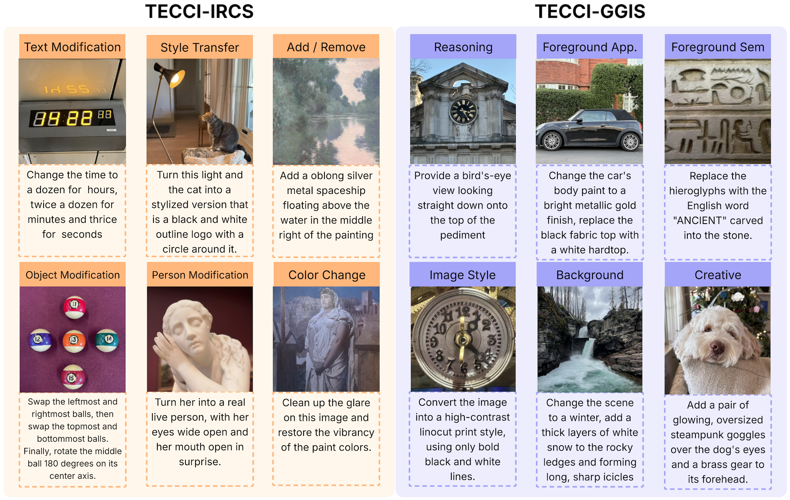
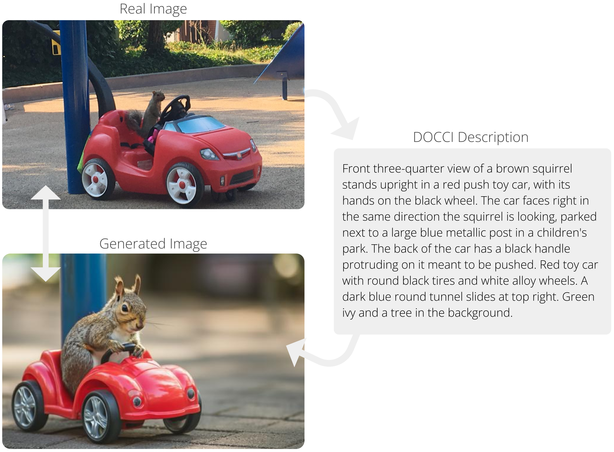
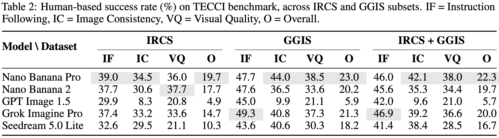
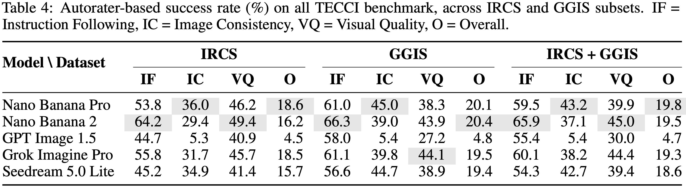

@article{AgrawalTECCI2026,
author = {Aishwarya Agrawal and Roy Hirsch and Yasumasa Onoe and Sherry Ben and Jason Baldridge},
title = {{TECCI: Tricky Edits of Collected and Curated Images}},
journal = {arXiv},
year = {2026}
}
TECCI comprises two complementary subsets: TECCI-IRCS, which contains 530 images with 530 edit instructions (one per image), and TECCI-GGIS, which contains 1,404 images paired with 7,020 edit instructions (five instructions per image). TECCI-IRCS consists of challenging manually written edit instructions. The edit instructions for the images in TECCI-GGIS were generated automatically using Gemini 3 Pro.

Models Evaluated: We evaluate the performance of several state-of-the-art image generation models,
Nano Banana 2, Nano Banana Pro, Grok Imagine Pro, Seedream 5.0 Lite and GPT Image 1.5, using TECCI.
Representative samples are shown in the figure below.
Evaluation Criteria: The quality of instruction-based image editing is inherently multi-dimensional and subjective, so we defined granular scoring guidelines.
Assesses the semantic alignment between the edit instruction and the resulting edited image. It measures whether the generative model accurately and completely fulfilled all the required modifications, serving as the primary benchmark for the system’s functional utility.
Evaluates the preservation of the original image’s identity and non-targeted regions and elements. This criterion penalizes "over-editing" or unrequested alterations to the background and perspective, ensuring the edit is minimal.
Captures the aesthetic and technical excellence of the edit, identifying any introduced artifacts such as blurring, pixelation, or unnatural blending. It determines if the modifications are seamlessly integrated to maintain a realistic, high-resolution appearance.

Human Evaluation on a subset of TECCI: We report the overall success rate alongside the per-criterion success rates. The low overall scores across the model suite highlight the inherent difficulty of TECCI. Even the most capable models struggle to exceed a 22.3 overall success rate. IRCS stands out as a significantly more challenging subset.

Automatic Evaluation on the Full set of TECCI: We propose an MLLM-based automatic evaluation framework that enables streamlined and reproducible benchmarking on the TECCI dataset. The autorater processes the source image, the edit instruction, and the resulting edited image. We prompt the model to perform a rigorous, systematic analysis of the visual output, independently rating each of the three evaluation criteria on a 1–5 Likert scale. The observed trends largely align with the human evaluation.

🤗 TECCI can be used via Huggingface Datasets 🤗
The annotations and images are licensed by Google LLC under CC BY 4.0 license.
DOCCI is a vision-language dataset containing 15,000 images, each paired with a highly detailed, human-annotated English descriptions. The dataset focuses on complex visual challenges such as spatial relations, counting, text rendering, and world knowledge with descriptions specifically crafted to distinguish similar or related images from one another. It has been used for vaious tasks including T2I generation, image captioning, and T2I retrieval.